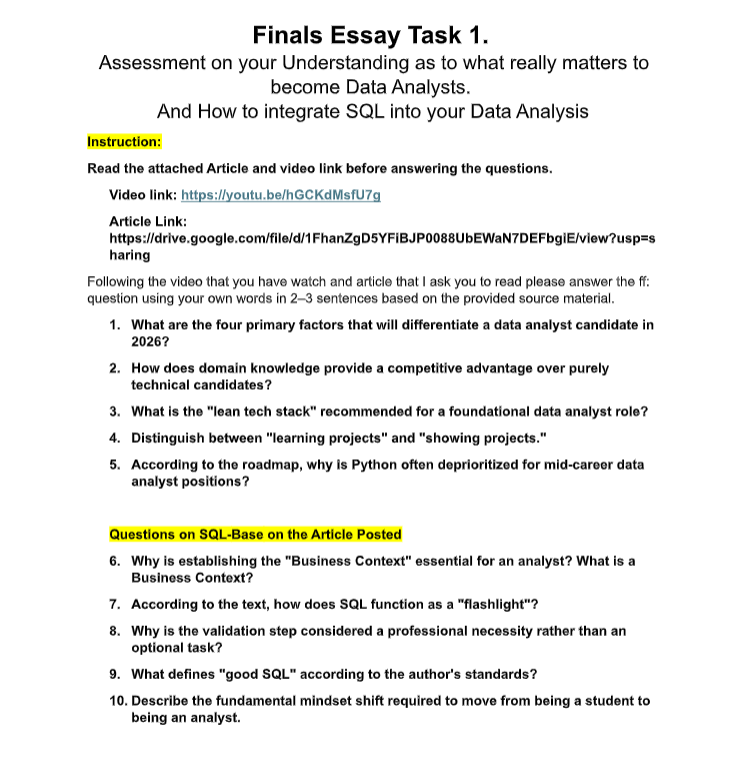

In this essay task, I reflected on my understanding of what it takes to become a successful data analyst and the important skills needed in the field of data analysis. The activity focused on the role of critical thinking, problem-solving, data preparation, and communication in analyzing and interpreting data effectively.
Through this activity, I learned that becoming a data analyst requires both technical and analytical skills. I also understood how SQL is an essential tool for organizing, querying, and analyzing data to support accurate decision-making.
Back to Projects Show Project